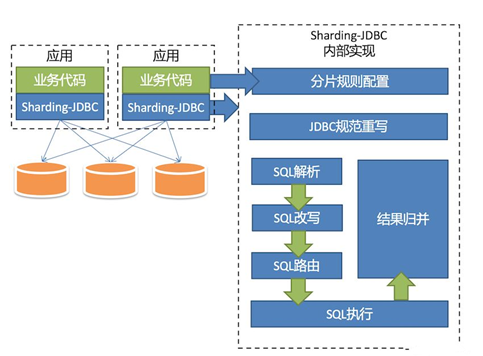

主从复制
MySQL主从复制是MySQL本身自带功能。从库生成两个线程，一个I/O线程，一个SQL线程；I/O线程去请求主库 的binlog，并将得到的binlog日志写到relay log（中继日志） 文件中；主库会生成一个 log dump 线程，用来给从库 i/o线程传binlog；SQL线程，会读取relay log文件中的日志，并解析成具体操作，来实现主从的操作一致，而最终数据一致。
读写分离
- MYCAT
- 原理MyCAT主要是通过对SQL的拦截，然后经过一定规则的分片解析、路由分析、读写分离分析、缓存分析等，然后将SQL发给后端真实的数据块，并将返回的结果做适当处理返回给客户端。
- 特点第三方客户端，反向代理
- 原理
- SpringBoot动态切换数据源
- 原理动态切换数据源，根据配置的文件，业务动态切换访问的数据库:此方案通过Spring的AOP，AspactJ来实现动态织入，通过编程继承实现Spring中的AbstractRoutingDataSource，来实现数据库访问的动态切换，不仅可以方便扩展，不影响现有程序，而且对于此功能的增删也比较容易。在Spring 2.0+中引入了AbstractRoutingDataSource, 该类充当了DataSource的路由中介, 能有在运行时, 根据某种key值来动态切换到真正的DataSource上。
- 流程 项目中需要集成多个数据源分别为读和写的数据源，绑定不同的key；采用AOP技术进行拦截业务逻辑层方法，判断方法的前缀是否需要写或者读的操作；如果方法的前缀是写的操作的时候，直接切换为写的数据源，反之切换为读的数据源也可以自己定义注解进行封装。
- 原理
分表分库
- 垂直拆分
- 定义根据不同业务，分位不同数据库。比如会员DB，订单DB，支付DB等等。
- 优点业务清晰，系统间整合和扩展容易。
- 缺点业务表不能join，只能通过接口调用，系统复杂度挺高，还有分布式事务问题。
- 定义
- 水平拆分把同一个表的数据按字段拆分到不同数据库，或者把同一个表拆分多份到不同数据库。
Sharding-JDBC
- 与MyCat的区别MyCat是一个基于第三方应用中间件数据库代理框架，客户端所有的jdbc请求都必须要先交给MyCat，再有MyCat转发到具体的真实服务器中。Sharding-Jdbc是一个Jar形式，在本地应用层重写Jdbc原生的方法，实现数据库分片形式。MyCat属于服务器端数据库中间件，而Sharding-Jdbc是一个本地数据库中间件框架。
- Sharding-JDBC实现读写分离原理需要在项目中集成主和从的数据源,Sharding-Jdbc根据DML和DQL语句类型连接主或者从数据源。(PS: 查看MasterSlaveDataSource即可查看该类getDataSource方法获取当前数据源名称)
- SpringBoot整合Sharding-Jdbc分为两种方式
- 原生配置方式,自己需要实现接口分库算法类需要实现SingleKeyDatabaseShardingAlgorithm
接口 分表算法类需要实现SingleKeyTableShardingAlgorithm接口 - 通过配置文件形式配置e.g: t_order 拆分成 t_order_0; t_order _1
- 原生配置方式,自己需要实现接口
- Sharding-Jdbc原理
Sharding-JDBC中的路由结果是通过分片字段和分片方法来确定的,如果查询条件中有 id 字段的情况还好，查询将会落到某个具体的分片。如果查询没有分片的字段，会向所有的db或者是表都会查询一遍，让后封装结果级给客户端。